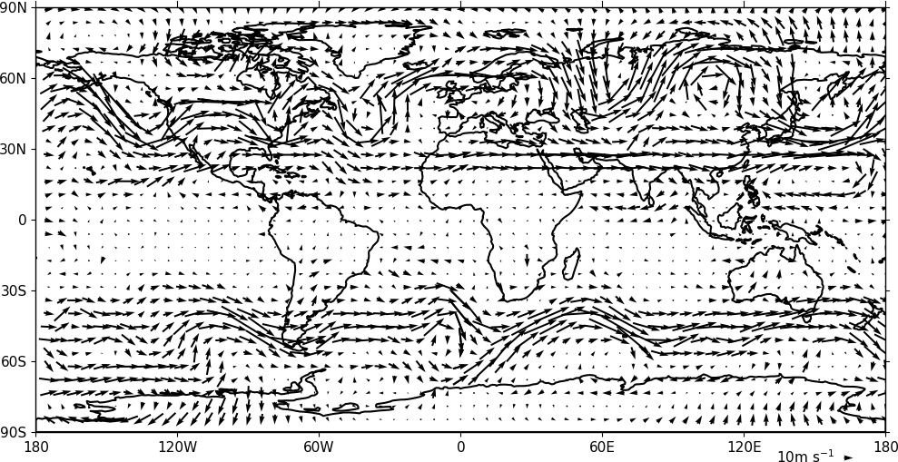
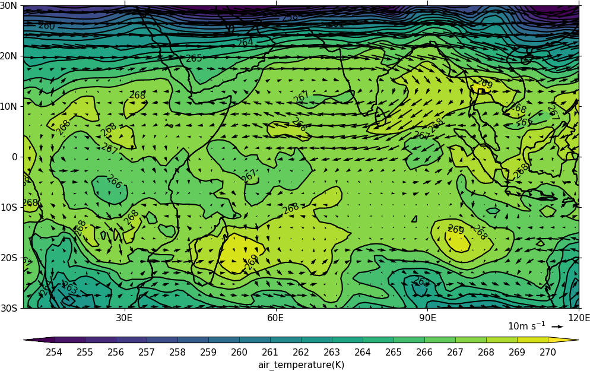
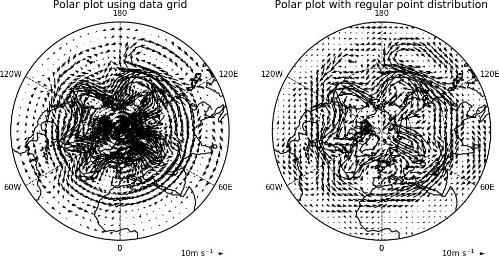
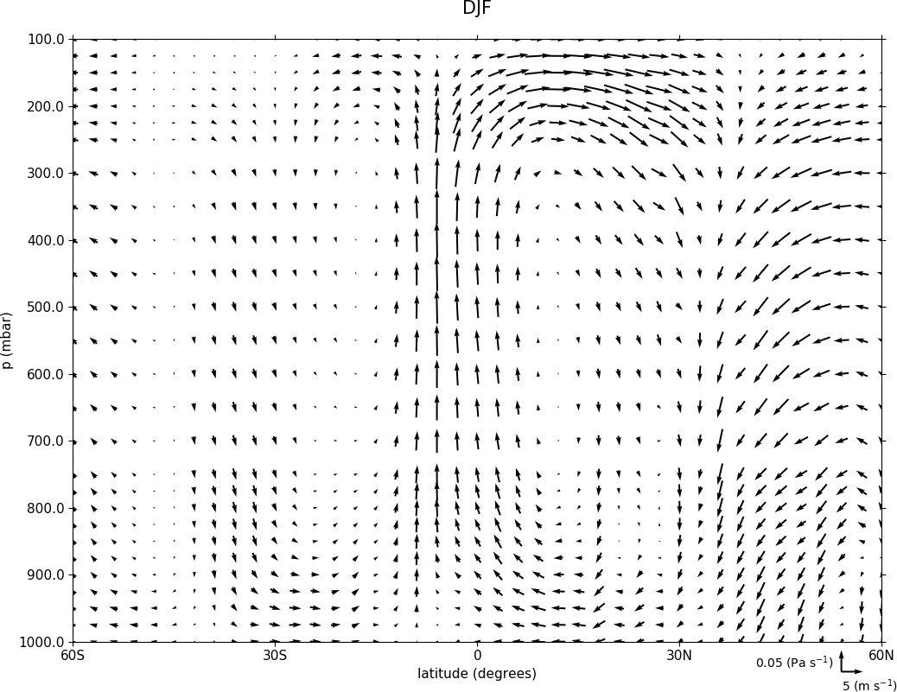

Vector and stream plots¶
Example 13 - vector plot¶
{kind=link}
import cf
import cfplot as cfp
f=cf.read('cfplot_data/ggap.nc')
u=f[1].subspace(pressure=500)
v=f[2].subspace(pressure=500)
cfp.vect(u=u, v=v, key_length=10, scale=100, stride=5)
Example 14 - vector plot with colour contour map¶
{kind=link}
import cf
import cfplot as cfp
f=cf.read('cfplot_data/ggap.nc')
u=f[1].subspace(pressure=500)
v=f[2].subspace(pressure=500)
t=f[0].subspace(pressure=500)
cfp.gopen()
cfp.mapset(lonmin=10, lonmax=120, latmin=-30, latmax=30)
cfp.levs(min=254, max=270, step=1)
cfp.con(t)
cfp.vect(u=u, v=v, key_length=10, scale=50, stride=2)
cfp.gclose()
In this plot we overlay a vector plot on a contoured temperature field.
Example 15 - polar vector plot¶
{kind=link}
Here we see the difference between plotting the vectors on the data grid and on a interpolated grid. The supplied grid gives a bullseye effect making the wind direction difficult to see near the pole.
import cf
import cfplot as cfp
u=cf.read('cfplot_data/ggap.nc')[1]
v=cf.read('cfplot_data/ggap.nc')[2]
u=u.subspace(Z=500)
v=v.subspace(Z=500)
cfp.mapset(proj='npstere')
cfp.gopen(columns=2)
cfp.vect(u=u, v=v, key_length=10, scale=100, stride=4, title='Polar plot using data grid')
cfp.gpos(2)
cfp.vect(u=u, v=v, key_length=10, scale=100, pts=40, title='Polar plot with regular point distribution')
cfp.gclose()
Example 16 - zonal vector plot¶
{kind=link}
import cf
import cfplot as cfp
c=cf.read('cfplot_data/vaAMIPlcd_DJF.nc')[0]
c=c.subspace(Y=cf.wi(-60,60))
c=c.subspace(X=cf.wi(80,160))
c=c.collapse('T: mean X: mean')
g=cf.read('cfplot_data/wapAMIPlcd_DJF.nc')[0]
g=g.subspace(Y=cf.wi(-60,60))
g=g.subspace(X=cf.wi(80,160))
g=g.collapse('T: mean X: mean')
cfp.vect(u=c, v=-1*g, key_length=[5, 0.05], scale=[20,0.2], title='DJF', key_location=[0.95, -0.05])
Here we make a zonal mean vector plot with different vector keys and scaling factors for the X and Y directions.
Example 16b - stream plot - basic¶
A streamplot is used to show fluid flow and 2D field gradients. In this first example the data goes from 0 to 358.875 in longitude. The cartopy / matplotlib interface seems to need the data to be inside the data window in longitude so we anchor the data in cf-python using the anchor method to start at -180 in longitude. If we didn't do this any longitudes less than zero would have no streams drawn.
import cf
import cfplot as cfp
import numpy as np
f=cf.read('cfplot_data/ggap.nc')
u = f[1].subspace(pressure=500)
v = f[2].subspace(pressure=500)
u = u.anchor('X', -180)
v = v.anchor('X', -180)
cfp.stream(u=u, v=v, density=2)
{kind=link}
Example 16c - stream plot - enhanced¶
In the second streamplot example a colorbar showing the intensity of the wind is drawn.
magnitude = (u ** 2 + v ** 2) ** 0.5
mag = np.squeeze(magnitude.array)
cfp.levs(0, 60, 5, extend='max')
cfp.cscale('viridis', ncols=13)
cfp.gopen()
cfp.stream(u=u, v=v, density=2, color=mag)
cfp.cbar(levs=cfp.plotvars.levels, position=[0.12, 0.12, 0.8, 0.02], title='Wind magnitude')
cfp.gclose()